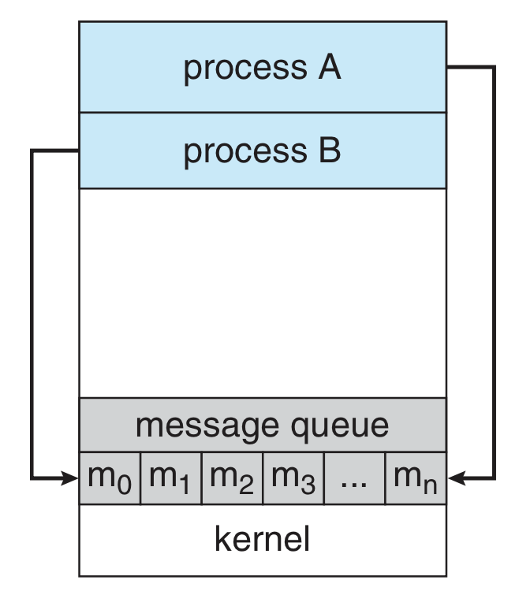
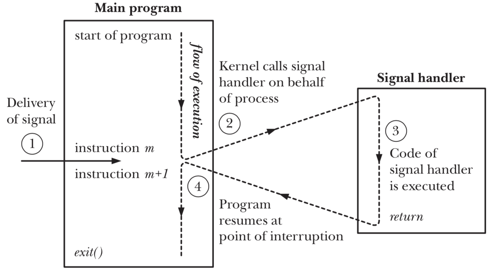

*Inter-Process Communication (IPC) When two or more processes would like to co-ordinate or exchange data the mechanism for doing so is called inter-process communication, usually abbreviated as IPC. If a process shares data with another process in the system, the operating system will provide some facilities to make this possible.
The motivations for inter-process communication are fairly obvious and we do not need to waste time with long descriptions of scenarios where IPC is desirable. Every time you send an e-mail, for example, there’s IPC going on. In the context of your own program, you could consider breaking a large task into smaller subtasks, allowing multiple users to edit the same data, and system modularity.
Before proceeding, we need to define some idea about what communication is: transfer of data from one process to another. The data being transferred is typically referred to as the message. The process sending that message is the sender and the process receiving it will be the receiver. This terminology is brutally, painfully obvious, but completeness is key.
The processes involved must have some agreement on what data a message should contain, and the way the data is formatted. Though there may be defined standards, e.g., transferring data formatted in XML, for the message content, the processes themselves would have to be aware of the fact that the message is in XML format. How this agreement is reached tends to fall outside the purview of the operating system; perhaps the authors agree in a meeting or the sender publishes its format online and the author of the receiver program writes her code to accommodate that.
Sending and receiving of messages may be either synchronous or asynchronous. If sending is synchronous, the sender sends the message and then is blocked from proceeding until the message is received. If sending is asynchronous, the sender can post the message and then carry on execution. If receiving is synchronous, the receiver is blocked until it receives the message. If receiving is asynchronous, the receiver is notified there is no message available and continues execution. Thus there are four combinations to consider, three of which are common :
Synchronous send, synchronous receive: the sender is blocked until the receiver collects the message; the receiver waits for a message and is blocked until it arrives.
Synchronous send, asynchronous receive: the sender is blocked when the message is sent, but the receiver will continue whether or not a message is available. This is a very uncommon configuration.
Asynchronous send, synchronous receive: the sender continues execution when the message is sent, but the receiver will wait until the message is received before it can continue. This is the most common configuration; usually the receiver needs a message to continue.
Asynchronous send, asynchronous receive: the sender can continue as soon as it sends the message, and the receiver will check for a message but will continue whether or not the message is available.
It is also common in the case of asynchronous receive for the receiver to send back another message confirming receipt of the message. When that happens, just reverse the labels: the receiver of the initial message is the sender of the acknowledgement.
A general paradigm for understanding IPC is known as the producer-consumer problem. The producer creates some information which is later used by the consumer. For example, the database may produce the data (some records from the database) to be consumed by the shell to be displayed to the user. This is a general problem and applicable to client-server situations (e.g., web servers sending out web pages to web browsers).
There are three approaches we will consider on how we can accomplish IPC:
The file system.
Message passing.
Shared memory.
All of these methods are quite common and a system can easily implement them all. There is no single option that is optimal in every situation, but each method has some areas of strength and weakness.
One way for two processes to communicate is through the file system. Messages stored in the file system will be persistent and survive a reboot. It can also be used when the sender and receiver know nothing about one another (and the programmer knows nothing about any other IPC mechanisms).
The producer may write to a file in an agreed upon location and the consumer may read from that same location. The operating system is still involved because of its role in file creation and manipulation (as well as permissions for who may read and write a file).
If one file is being used then we have the problem of co-ordination: making sure one process does not overwrite the changes of another. We can get around this, however, by using multiple files with unique IDs. Consider an example from a co-op work term: if the producer is generating XML data, it can write in a file in a designated import/ directory. The consumer program scans the directory, and when it finds files, reads the file and imports the data contained therein. The imported data is then shown in the program. In this case, since one process writes files and another reads them, there is no possibility that one process overwrites the data of another. As long as the sender chooses distinct file names, it will not overwrite a message if a second message is created before the receiver picks up the first.
Message passing is a service provided by the operating system where the sender will give the message to the OS and ask that it be delivered to a recipient. There are two basic operations: sending and receiving. Messages can be of fixed or variable size.
Our experience with postal mail, or e-mail, suggests that to send a message successfully, the sender needs to indicate where the message should go. Under direct communication, each process that wants to communicate needs to explicitly name the recipient or sender of the communication, making the send and receive functions :
send(A, message) – Send a message to process A.
receive(B, message) – Receive a message from process B.
This requires symmetric addressing: the sender and receiver have to know one another to communicate. This deviates from our experience in sending postal mail: receiving an item does not require foreknowledge of the sender. We would more typically expect asymmetric addressing: the sender names the recipient, but the receiver can pick up items from anyone. The system calls for that scheme are :
send(A, message) – Send a message to Process A (unchanged).
receive(id, message) – Receive a message from any process; the variable id is set to the sender.
In either case, we have to know some identifier for the other processes. This is not very flexible; if we want to replace process B with some alternative software, do we have to change the identifier in A, recompile it, and reinstall it? Do we “fake” the identifier of the new software so it calls itself B even though it’s not the same software? Furthermore, oftentimes the sender will produce the data but is not interested in who receives it.
What we would like is indirect communication where the messages are sent to mailboxes. That makes our send and receive functions :
send(M, message) – Send a message to mailbox M.
receive(M, message) – Receive a message from mailbox M.
A mailbox may belong specifically to one process or may be set up by the operating system. If the mailbox belongs to the process, then anyone can send to this mailbox, but only the owning process may receive messages from that mailbox. If the owner process has not started or has terminated, attempting to send to that mailbox will be an error for the sender.
If the mailbox is owned by the operating system, it is persistent and independent of any particular process. When we used direct communication, e.g., sending to process A, the communication relationship is 1:1 - one sender and one receiver. When there was a mailbox owned by A, we could be certain that only process A could retrieve items from that mailbox. There is no conceptual reason, however, preventing an operating system mailbox from belonging to more than one process. If mailbox M belongs to the operating system and processes P_{1} and P_{2} have access to it, which process will receive a message sent to that mailbox?
There are two ways we can deal with this problem. The first is that the OS should allow only one process at a time to pick up items from the mailbox, thus preventing the problem altogether. The other solution is that the OS may have some scheme: whichever process gets there first, alternation (taking turns), or any other system of deciding whose turn it is.
The diagram below shows a message queue for communication between processes A and B:

A view of memory in a message-passing system .
In this diagram we see something new for the receiver process: a message queue.
Thus far we have dealt with messages one at a time: the sender wants to send one message and the receiver wants to receive one message. If the sender wants to send a second message before the first message is received, the sender will have three choices, regardless of whether the communication is synchronous:
Wait for the last message to be picked up (block).
Overwrite the last message (sometimes this is what you want).
Discard the current message (let the old one remain).
A message queue may alleviate the problem or just “kick the can down the road”. If a queue exists, when sending a message, that message is placed in the queue and when receiving a message, the first message is taken. If the queue is of (effectively) unlimited size, then the problem may generally be ignored. If the queue has a fixed size then the problem is put off but not solved: the sender can keep adding messages to the queue until the queue is full. If the queue is full, the sender has to face the same choices of what to do: block, overwrite, or discard.
We got onto the topic of inter-process communication by talking about signals, so it makes sense to start with then. Signals are, as previously introduced, an interrupt with a specified ID. They don’t contain any “message” within them, so they are somewhat limited. It’s a little bit like how pagers work (strange as those are to think about, doctors still use them!). When someone is paged their pager vibrates and they can see only the number who paged them. So it’s like a text message, but the body is blank. Nevertheless, the poor sleep-deprived overworked medical resident is alerted and will react appropriately, dealing with the situation before going back to whatever else they were doing before being paged.
As you can imagine, the fact that a signal contains no message is a limitation that means signals can’t be used for every single interprocess communication scenario. That is true, but it is sufficient for some of them. When the fire alarm sounds in a building, you don’t need an accompanying voice announcement to say “this indicates a fire alarm; please calmly exit the building” – you will figure this out just fine on your own (one hopes!). Some of the reason it works out, though, is that you have previously been informed that when the fire alarm sounds it means you need to exit the building, and the same is true for signals: you need to know what to listen for and what’s supposed to happen if you want to react accordingly.
The appropriate header for including signals is signal.h and it contains the definitions that let you write SIGKILL instead of having to put an explicit int 9 in your program. Earlier, we introduced a small table of some of the common UNIX signals. They are by no means exhaustive, but unfortunately there is not always 100% agreement between different implementations about what the higher signal numbers are. For this reason it’s helpful to use the names, so if you use SIGABC then it abstracts away the fact that on one system that’s implemented as being X and on another it’s Y.
We already learned how to send a signal from the command line. But there are two functions for sending a signal programmatically:
Both functions return 0 if they were successful and -1 if they were unsuccessful (for whatever reason, such as no such process existing). The raise function sends the signal to the current process, so a nice little shortcut when you need it.
We need to know the process ID of the recipient. This is fine, but may require a little bit of negotiation for how processes find out about each other. A common convention is for services to register themselves in some way, which might be as simple as putting a file on disk in a specific location that contains the process ID. For example, mysql (a database) server will put its process ID in the file /var/run/mysqld/mysqld.pid and in that file is just the number of its process ID (e.g., 1494). So if you know where to look, you can find the recipient’s address. But this could also be communicated in any other way.
You can use kill to do some interesting things, like signal all your processes. It depends on the value chosen for your pid argument :
pid > 0 – send the signal to the process with process ID pid.
pid == 0 – send the signal to all processes in the same process group as the caller.
pid == -1 – send the signal to all processes for which the calling process has permission to send a signal, except init and the calling process. Broadcast, basically.
pid < -1 – send the signal to all processes whose process group ID is equal to the absolute value of pid.
In addition to the signals we know, you can also invoke the kill function with a 0 argument for the signal. This is called the “null signal”. It does not actually send any signal, but can be used to check if the recipient process exists. If not, the errno return value of ESRCH tells you that it no longer exists . This is of limited utility, however, because (1) the process might exit between the time you check for its existence and the time you do something with that information; and (2) process IDs are only relatively unique so a given ID could be reused for a different process, and the recipient is no longer whom you expect it to be...
A signal can be sent to a given process, but that process can only actually deal with it when that process is running. A signal is generated by something, and it is later delivered to the recipient. But during the time between generation and delivery, we say the signal is pending. The pending signal is typically delivered at the first opportunity, which might be immediately if the recipient is currently executing .
Interestingly, for most (but not all) signals, your process can choose to refuse to listen. This is called blocking signals, and can be done to any with with the exception of SIGKILL and SIGSTOP. When a signal is blocked, it just remains in the pending state until signals of that type are unblocked. Blocking signals is supposed to be temporary, although a badly-behaved program could ignore them indefinitely.
If the same signal is sent more than once when that signal is blocked by the recipient, it might be delivered only once, depending on your particular operating system implementation .
As introduced earlier, signals have a default action. The action that is taken when the signal is delivered is called the disposition of the signal. If you don’t explicitly change what happens when the signal arrives, the default (see the table) happens. But we can change it. There are three options (1) ignore it, (2) run a signal handler, and (3) run the default action. The third option is used to undo an earlier change (such as if we said we wanted to ignore the signal but now no longer do). We’ll restrict our to the “run a signal handler” option in this lecture.
If we decide to register a signal handler, the function is:
Yikes! That is difficult to read. The good news is that using this in practice is a lot easier. What we actually do is call a function to say “for signal X, run function foo”. There are restrictions on the function signature. It must have a void return type and take one parameter of an int. It returns a pointer to the old handler (if there was one). You could use that to set it back if you wanted.
So a sample signal handler would be:
The integer parameter is set to the number of the signal received. This allows us to have one signal handler that handles many signals, if we wish, but differentiate between them at the time of invocation. To register the signal handler, the simplest way is to ignore the return value of signal:
Alright, with your signal handler set up, then the workflow looks like the diagram below:

Signal delivery, signal handler execution and return .
The content of your signal handler, however, is restricted. Because the handler deals with an interrupt and runs between two instructions it is important to make sure that the signal handler doesn’t mess anything up. If the signal handler runs in the middle of malloc and the signal handler itself calls malloc it could put the memory management in an invalid state .
We can only use functions that are reentrant. That is to say, a function that can be interrupted during execution, have another complete to that same function execute, and then resume (and have everything be okay). In particular the big ones to avoid are: printf, malloc, free, and anything that could possibly block the process (e.g., a read of a file!). The subject of reentrancy is a little bit more complicated than can be covered in a few sentences, and future courses should cover reentrancy in much more detail.
There are tables of what functions are safe to invoke from within a signal handler. In general what you are looking for is a designation of async-signal safe.
To block a signal, unblock one, or just find out what the current state is, the function is:
The first argument is what we would like to do here: if SIG_BLOCK, the signals pointed to by set are added to the block list; if SIG_UNBLOCK then the ones in set are removed from the block list; if SIG_SETMASK then set is assigned to the signal mask (overwrite all current values).
The third argument is optional, and if a pointer is provided then upon a change to the signal mask, old_set is updated to contain the values from before the change.
There is also the ability to manage signal disposition in a more advanced way using the function sigaction, but we will consider this beyond the scope of the course.
There are some helper functions to fill in the mask:
int sigemptyset( sigset_t *set ); /* Initialize an empty sigset_t */
int sigaddset( sigset_t *set, int signal ); /* Add specified signal to set */
int sigfillset( sigset_t *set ); /* Add ALL signals to set */
int sigdelset( sigset_t *set, int signal ); /* Remove specified signal from set */
int sigismember( sigset_t *set, int signal ); /* Returns 1 if true, 0 if false */A quick example based on :
sigset_t set;
sigset_t previous;
sigemptyset( &set ); /* Initialize set */
sigaddset( &set, SIGINT ); /* Add SIGINT to it */
sigprocmask( SIG_BLOCK, &set, &previous ); /* Add SIGINT to the mask */
/* SIGINT is blocked in this section */
sigprocmask( SIG_SETMASK, &previous, NULL ); /* Restore previous mask */Finally, if you want to pause your program for a bit until the call is interrupted by a signal, there is the function int pause( ). This function always returns -1 and it suspends your program until the signal handler runs. This can be useful if we really do need to wait for something...